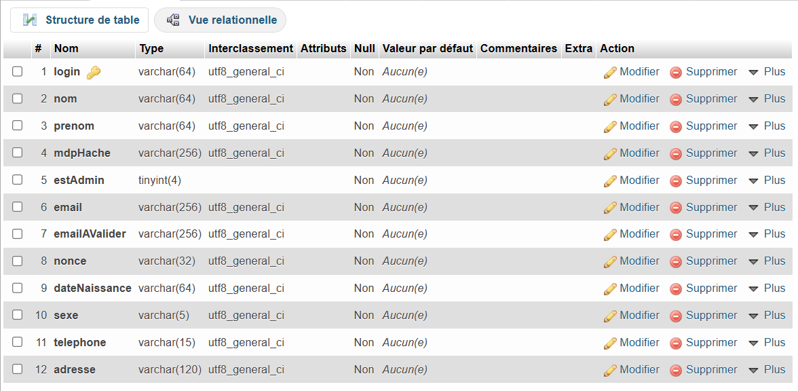
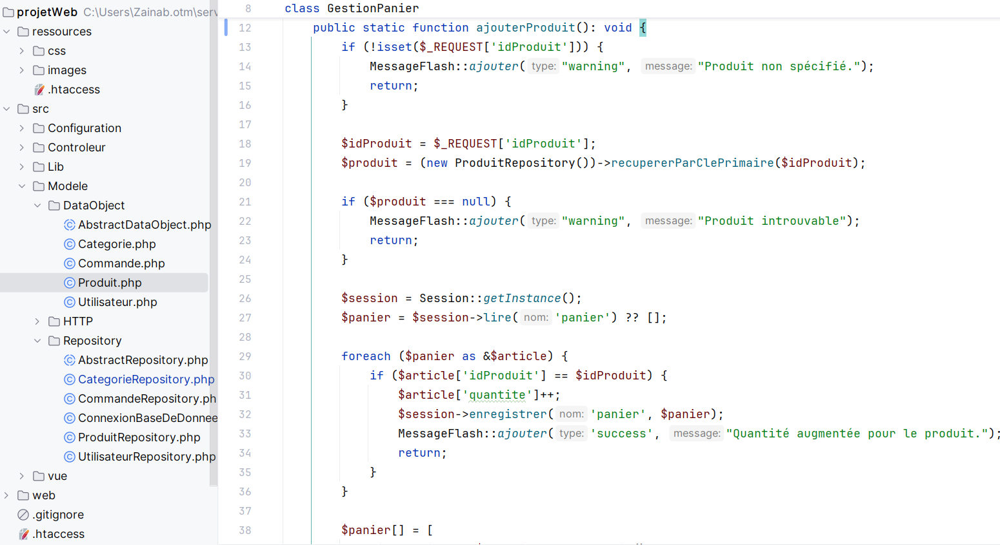
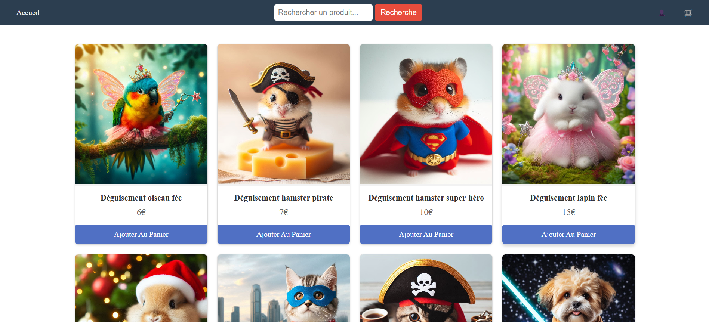

Projet "Pattes À Porter"
Ce projet WEB de notre troisième semestre avait pour objectif de développer un site de e-commerce intitulé "Pattes à Portes".
Inspiré des interfaces et fonctionnalités des plateformes en ligne, ce projet a été structuré en trois grandes parties
la conception et la gestion d’une base de données,
le développement d’un backend sécurisé et robuste,
et la création d’un frontend ergonomique et intuitif.
Réalisé en équipe de trois personnes, ce projet m’a permis de consolider mes compétences en développement web
tout en approfondissant des notions clés de sécurité, d’organisation des données et d’expérience utilisateur.
 Back-End

Front-End
